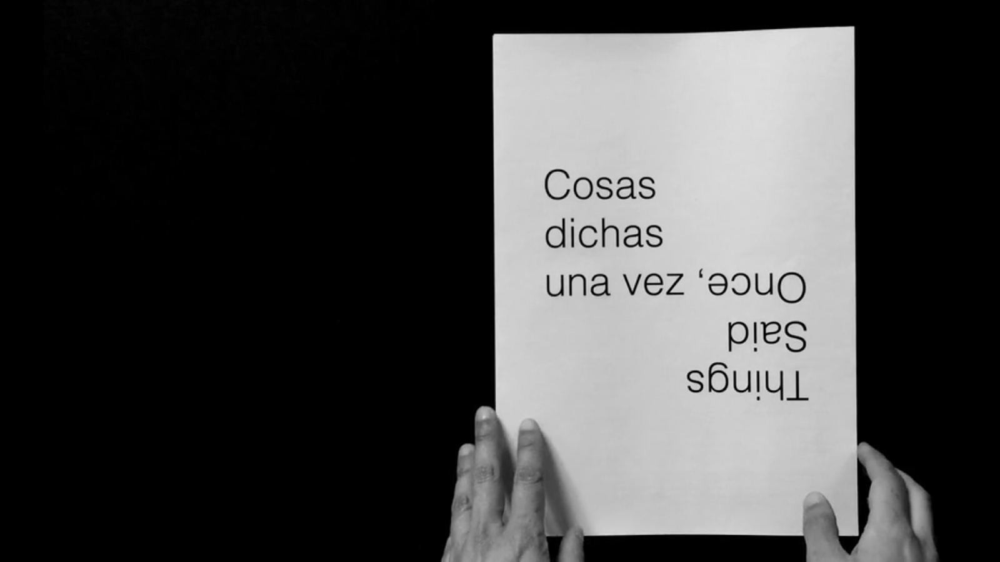

2016
Printed edition
Edited by Núria Gómez Gabriel
Barcelona
2100 x 297 mm folded paper in envelope
20 copies individually numbered and signed
Bilingual (Spanish/English)
Produced by La KINO and Loop Festival
Things Said Once has also been published in Spanish, French, Persian, Swedish, traditional Chinese, and as a comic.
See also: Things Said Once (the performance)